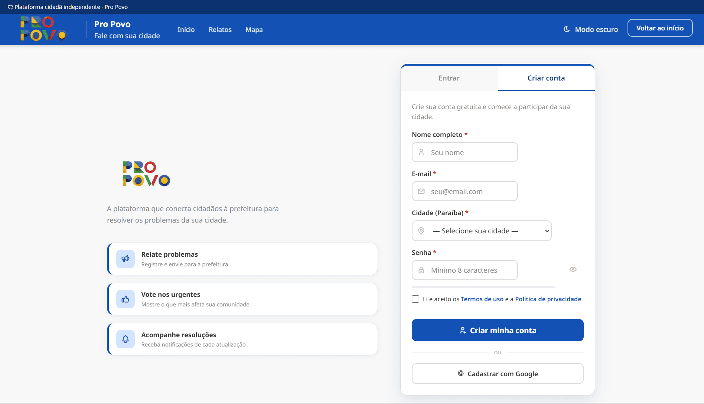
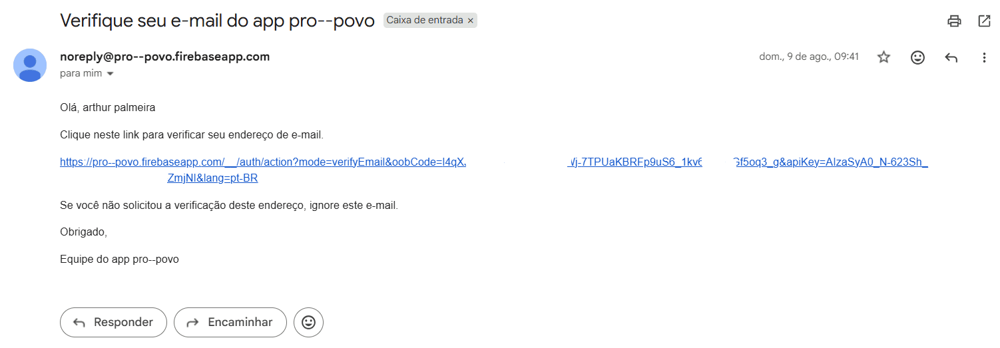
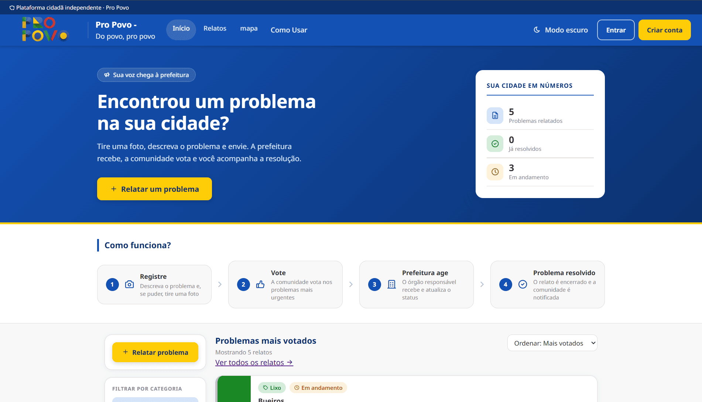
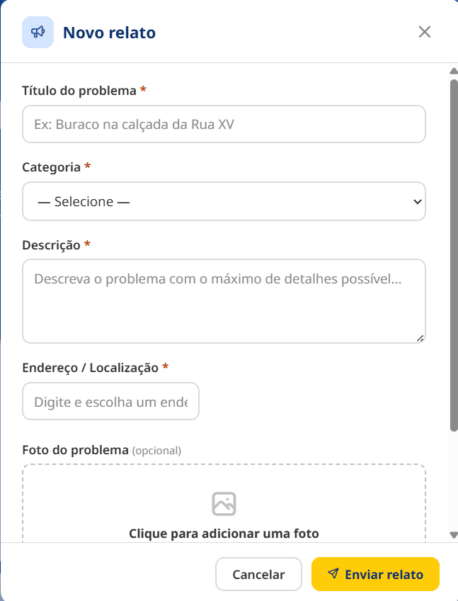
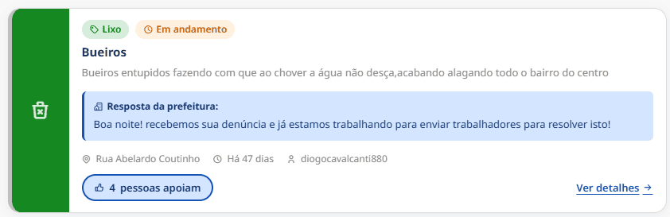
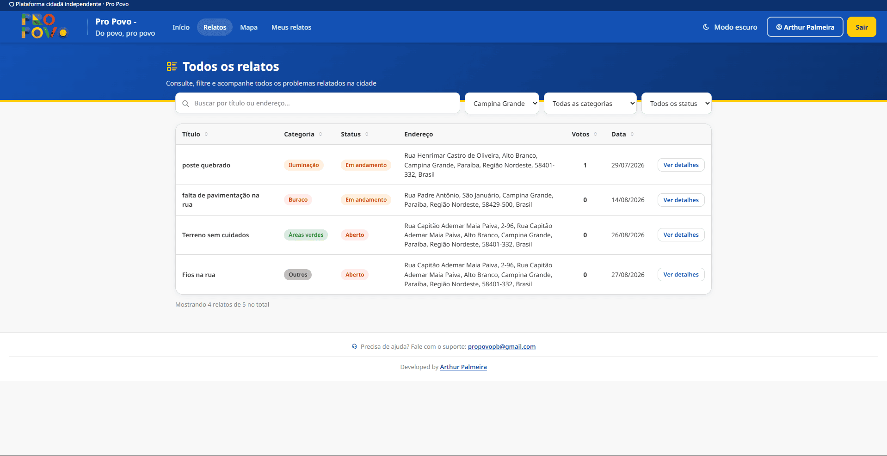
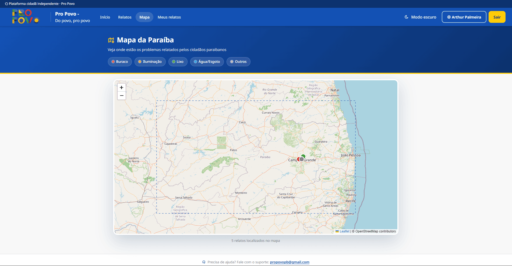
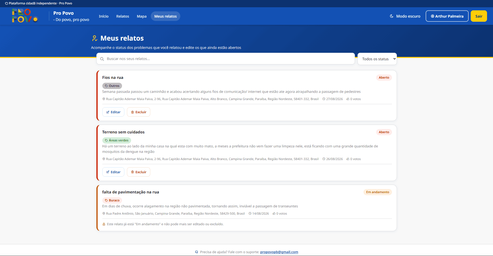

Um guia passo a passo, da criação da conta ao acompanhamento da resposta da prefeitura
Atualizado em 30 de agosto de 2026O Pro Povo tem dois lados: o cidadão relata problemas de infraestrutura da cidade e acompanha o andamento, e a comunidade vota nos relatos mais urgentes para ajudar a prefeitura a priorizar. Este guia mostra o caminho completo, na ordem em que você normalmente vai usar o site.
Na página inicial, clique em "Entrar" na barra de navegação e depois na aba "Criar conta". Preencha nome, e-mail, cidade e senha (mínimo de 8 caracteres), aceite os termos de uso e clique em "Criar minha conta". Também é possível se cadastrar com um clique usando "Cadastrar com Google".
Images/tutorial/passo-01-criar-conta.png

Após o cadastro, você recebe um e-mail de confirmação (confira também a caixa de spam). A confirmação é obrigatória: sem ela, o site não permite enviar um relato. Você pode reenviar o e-mail de confirmação a qualquer momento pela opção "Meu perfil".
Images/tutorial/passo-02-confirmar-email.png

Clique em "Relatar um problema", disponível no topo da página inicial e também na barra lateral esquerda. É necessário estar logado e com o e-mail confirmado para abrir o formulário.
Images/tutorial/passo-04-abrir-formulario.png

Dê um título curto e claro ao problema (mínimo 5 caracteres), escolha a categoria mais próxima — Buraco/Via danificada, Iluminação pública, Lixo/Entulho, Água/Esgoto, Áreas verdes ou Outros — e descreva o problema com detalhes (mínimo 10 caracteres). Depois, digite o endereço e escolha uma das sugestões da lista (só aparecem endereços dentro da Paraíba — é obrigatório selecionar um item da lista). Por fim, anexe uma foto do problema, se quiser (JPG, PNG, WEBP ou HEIC, até 10 MB) — esse campo é opcional.
Título, categoria e descriçãoImages/tutorial/passo-05a-dados-problema.png

Em qualquer relato, clique em "pessoas apoiam" para votar. O botão fica destacado quando você já votou, e um novo clique remove o voto. Quanto mais votos, maior a prioridade percebida pela prefeitura.
Images/tutorial/passo-07-votar.png

A página inicial mostra só os relatos mais votados. Clique em "Relatos" na barra de navegação para ver a tabela completa, com busca por título/endereço e filtro por status.
Images/tutorial/passo-09-lista-relatos.png

Clique em "Mapa" para ver todos os relatos com endereço geolocalizado, marcados por cor conforme a categoria. Clique em um marcador para ver um resumo do relato.
Images/tutorial/passo-10-mapa.png

Com a conta logada, clique em "Meus relatos" na barra de navegação para ver só os problemas que você mesmo enviou, com busca e filtro por status.
Images/tutorial/passo-11-meus-relatos.png
